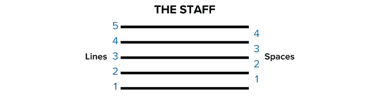
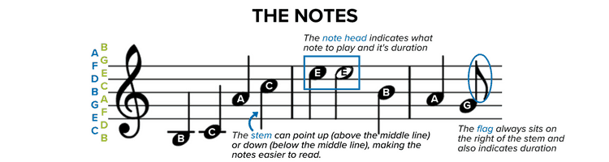
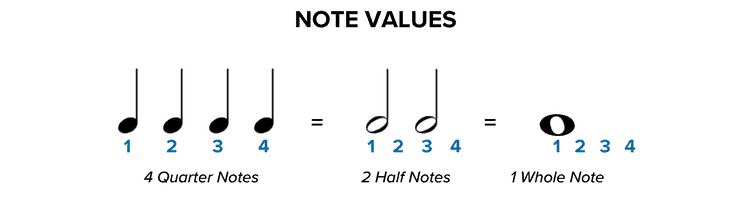

The basic symbols of Musical Notation
Music is made up of a variety of symbols, the most basic of which are the staff, the clefs, and the notes. All music contains these fundamental components, and to learn how to read music, you must first familiarize yourself with these basics.

The Staff [1]
The staff consists of five lines and four spaces. Each of those lines and each of those spaces represents a different letter, which in turn represents a note. Sheet music notes, represented by lines and spaces, are named A-G, and the note sequence moves alphabetically up the staff.


Clefs [1]
There are two main clefs with which to familiarize yourself:
- Treble Clef: The treble clef has the ornamental letter G on the far left side. The G’s inner swoop encircles the “G” line on the staff. The treble clef notates the higher registers of music, so if your instrument has a higher pitch, such as a flute, violin, or saxophone, your sheet music is written in the treble clef.
- Bass Clef: The line between the two bass clef dots is the “F” line on the bass clef staff, and it’s also referred to as the F clef. The bass clef notates the lower registers of music, so if your instrument has a lower pitch, such as a bassoon, tuba, or cello, your sheet music is written in the bass clef.

Notes on a staff [1]
Notes placed on the staff tell us which note letter to play on our instrument and how long to play it. There are three parts of each note, the note head, the stem, and the flag. All music notes have a note head, either filled (black) or open (white). Where the note head sits on the staff (either on a line or space) determines which note you will play. The note stem is a thin line that extends either up or down from the note head. The line extends from the right if pointing upward or from the left if pointing downward. The direction of the line doesn’t affect how you play the note but serves to make the notes easier to read while allowing them to fit neatly on the staff.

Notes values [1]
Whether a note head is filled or open shows us the note’s value, or how long that note should be held. Start with a closed note head with a stem. That’s our quarter note, and it gets one beat. An open note head with a stem is a half note, and it gets two beats. An open note that looks like an “o” without a stem is a whole note, and it gets held for four beats.
References
- MusicNotes, "How To Read Sheet Music: A Step-by-Step Guide".